무상급식 논란 - 두 나라 이야기
게시: 2020-07-23T06:30:42+09:00
지금은 흘러간 이야기가 되었습니다만, 과거 무상급식이 우리나라 정계의 뜨거운 감자로 떠오른 적이 있었습니다. 워낙 뜨거운 논쟁거리라서 경기도 지방의회에서 여야간에 뜨거운 논쟁을 벌이다 결국 무상급식 지원을 하되 예산 이름을 무상급식 지원금이 아닌 학교교육급식 지원금이라고 이름만 바꿔 부르기도 했습니다. 결과적으로는 무상급식이 되고 있습니다만 그럼에도 불구하고 아직 우리나라 안 망했습니다. 뭐만 하면 우리나라 망한다고 고래고래 멱 따는 소리를 내시던 분들, 반성 좀 하셨으면 합니다. 하지만 일부 보수측에서 말하는 것처럼, 사실 무상급식이라는 말은 옳지 않습니다. 세상에 공짜는 없고, 누군가는 그에 대해 비용을 내는 것이니까요. 결국 학생들 급식을 각자의 가족이 내느냐, 아니면 세금으로 내느냐가 핵심 논점인데, 여야 좌우 보수진보 양측에서 내세우는 바를 들어보면 양측 모두 일리있는 이야기를 하고 있습니다. 확실한 것은 소위 무상급식을 하기 위해서는 세금을 더 올려야 한다는 것입니다. 문제는 그 세금을 대기업과 부유층이 부담하느냐, 아니면 국민 대부분이 고르게 부담하느냐 하는 것이겠지요. 저는 전자의 입장입니다. 하지만 그건 무상급식을 한다는 전제하의 입장일 뿐이고, 저는 꼭 무상급식을 해야 한다고 주장하지는 않습니다. 제가 그렇게 생각하게 된 배경에 대해서 구구절절 설명하는 것보다는, 영국과 프랑스의 매우 대조적인 학교 급식 제도에 대한 자료를 몇가지 소개해드리는 것이 낫다고 생각합니다. 일단 전세계적으로 무상급식을 하는 나라는 많지 않습니다. 스웨덴, 핀란드, 체코, 그리고 발트 3국 중에서 경제적으로 잘 나가는 에스토니아가 전체 학생들에 대해 무상급식을 하고 있고, 인도와 미국, 브라질 등 몇몇 국가가 일부 저학년 학생들을 대상으로 무상급식을 하고 있습니다. 그리고 영국이 그 일부 무상급식의 대열에 2013년 가을부터 합류했습니다. 프랑스는 무상급식은 현재 고려하고 있지 않은 모양입니다. 먼저, 재미삼아 아래 유튜브 동영상을 보시지요. 이 영상에서는 세계 각국의 학교 급식 메뉴를 보여줍니다. 반갑게도, 우리나라 메뉴도 나옵니다.

https://www.youtube.com/watch?v=Po0O9tRXCyA
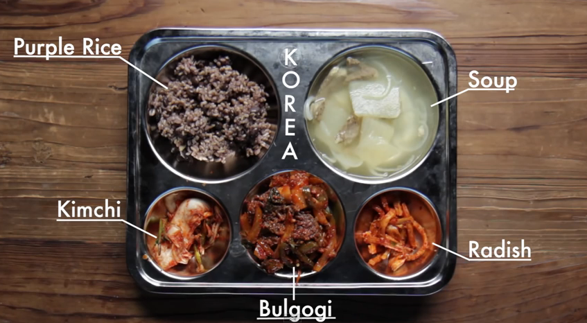
최악의 명성을 떨치고 있는 영국 급식도 나오는데, 그래도 여기서는 꽤 그럴싸 하게 나옵니다. 그런데 단연 눈길을 사로잡는 급식은 프랑스입니다. 다른 나라들은 모두 식판 하나에 다 올라가는데, 프랑스만 무려 4컷을 쓰거든요.
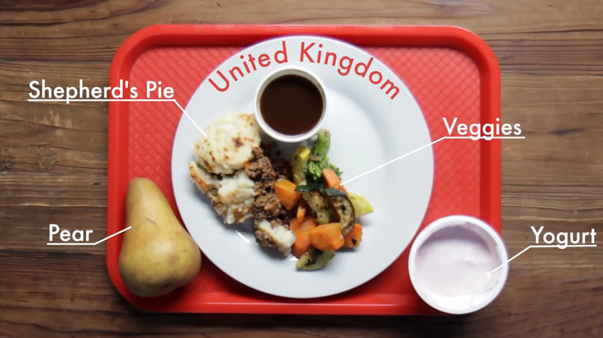 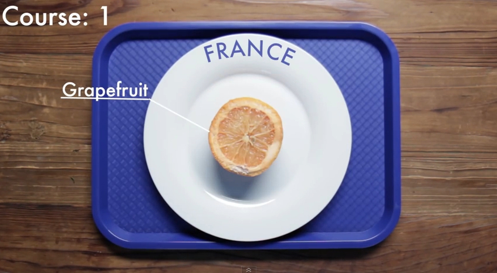 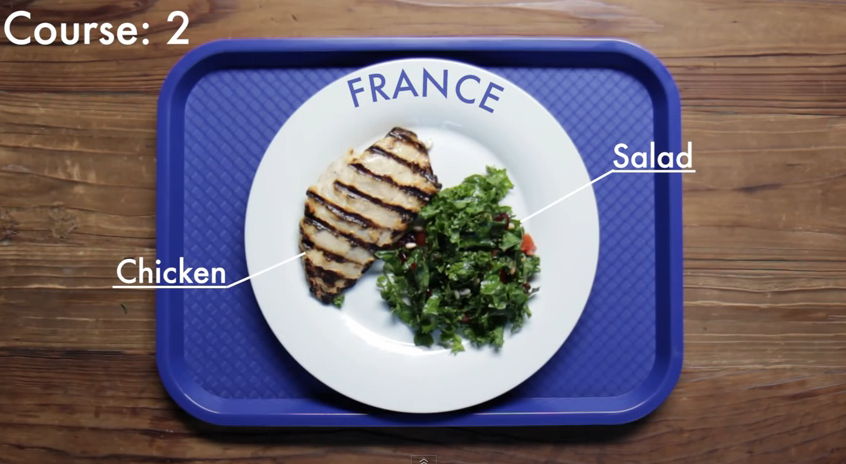 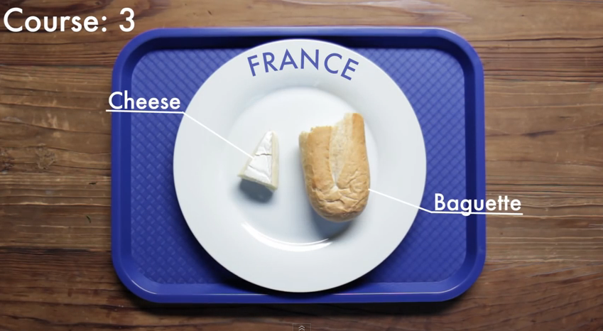 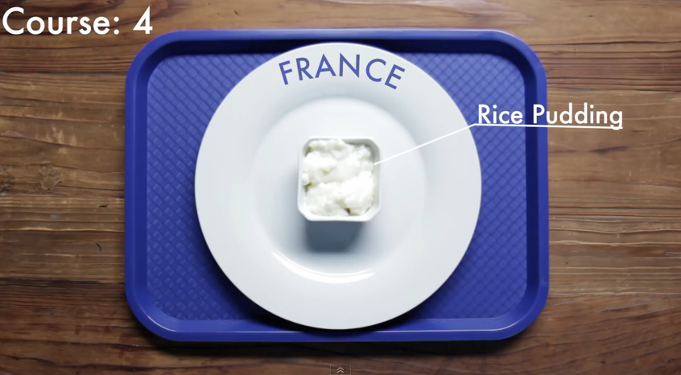
먼저 영국의 급식에 대해 보시지요. 영국의 경우에 1944년 전쟁 중에 어린이들에게는 무상급식을 제공하기 시작했습니다. 때가 전시이다보니 식량 사정이 원활하지 않았고, 그로 인해 어린 학생들의 영양 상태가 나빠졌습니다. 그런 현실을 반영하여, 최소한 한끼라도 가정 형편과 상관없이 아이들에게 따뜻한 음식을 먹이도록 하자는 것이 그 취지였습니다. 그러다 2.5 펜스라는 낮은 비용을 평준화된 점심값으로 내도록 1949년 제도가 약간 바뀌었습니다. 이 비용은 인플레에 따라 점점 늘어났지만 그래도 저소득층에게는 저렴한 가격에 아이의 점심을 해결할 수 있는 일종의 혜택이었습니다. 그러다 1979년, 요즘의 신자유주의자들이 영웅시하는 마가렛 댓처가 총리로 취임했습니다. 복지 축소와 민영화, 그리고 무한 경쟁을 내세우던 댓처는 그 정책을 학교 급식에도 적용하여, 1980년 학교 급식에 들어가는 지원금을 없앴을 뿐만 아니라 학교 점심 준비를 더 이상 공립 학교 직원이 아닌, 사기업들의 경쟁 입찰에 맡겼습니다. 그 결과는 학교 급식의 전반적인 질 저하였습니다. 몸에 좋은 음식을 좋은 재료를 써서 하는 준비하는 것보다는, 아이들이 잘 먹을 피자나 버거, 프라이 같은 정크 푸드를 최소한의 비용을 들여 만드는 것이 급식 업체의 이윤과 직결되어 있었으니까요. 그 결과가 바로 악명높은 영국 학교 급식이었습니다. 1999년 의학 연구 위원회 (Medical Research Council)의 연구에 따르면, 1950년대에 배급제 점심을 먹던 영국 아이들이 1990년대의 아이들보다 영양학적으로 훨씬 더 나은 식사를 했다고 합니다. 그래서 제이미 올리버가 학교 급식에 혁명을 일으키자고 나선 것은 유명한 이야기입니다. 2004년 대대적인 캠페인에 나선 이 일개 요리사의 활약은 그 다음해에 치루어진 총선에서도 큰 이슈가 되었습니다.
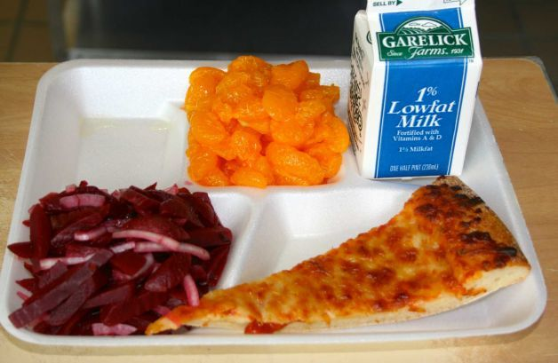 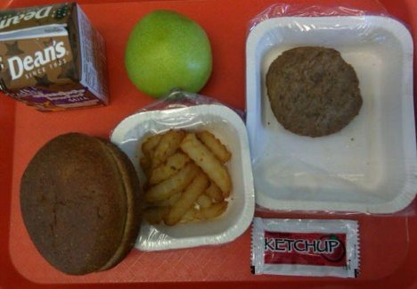
영국 학교 급식의 질 문제는 그렇다치고, 비용 문제로 되돌아오자면 결국 영국 학교에서는 마가렛 댓처 덕분에 1980년 이후로는 저소득층 자녀에게만 무료로 점심을 주게 되었습니다. 실업수당이나 생계보조금을 받는 저소득층 부모를 가진 아이들이 이런 무료 점심을 먹을 수 있는 자격을 갖는데, 지금도 대략 전체의 15~20% 정도의 학생들이 이에 해당합니다. 댓처 정부로서는 매우 합리적인 조치라고 생각했을 것입니다. 그 전에는 (비록 작은 액수였지만) 중산층과 같은 액수의 돈을 내고 먹던 저소득층 자녀들이 이젠 아예 무료로 먹게 되었으니까요. 매우 효과적인 나랏돈 절감이었습니다.
그러나 영국에서도 이 선별적인 무료 점심 프로그램의 폐해에 대해 말이 많다고 합니다. 영국의 무료 점심 지원은 현금으로 그 부모에게 지원되는 것이 아니라 (아마 그럴 경우 몰상식한 부모가 애들 점심 값으로 지원된 현금으로 술이나 도박을 할 가능성을 무시할 수 없었나 보지요) 학교 영양사에게 무료 대상 어린이의 명단이 통보되는 방식을 택하고 있습니다. 그러다보니, 무료 급식 신청을 할 경우 누가 무료 급식을 먹는지 결국 노출되어 '가난뱅이 자식놈'이라는 낙인이 찍히는 부정적인 결과를 낳는 경우가 많다고 합니다. 실제로 무상급식 대상인 저소득층 아이들 중 11% 정도는 그런 낙인이 두려워 아예 무료 급식 신청을 안한다고 합니다. 그러다보니 Child Poverty Action Group 같은 단체에서는 모든 초등학생들에게 무료 급식을 하자는 목소리를 내고 있고, 또 영국판 전교조인 전국 교사 노조 (National Union of Teachers)에서도 무료 급식이 중요한 목표 중 하나입니다. 그런 노력의 결과, 마침내 2013년 9월에는 저학년 어린이들부터 먼저 전체 무료 급식 혜택을 주는 제도가 발표되었습니다. 이 급식에 들어가는 비용은 한끼당 2.3 파운드, 우리 돈으로 약 3700원입니다.
(친노종북세력이 영국에도 있나 봐요. 영국의 빨갱이들 전국 교사 노조.... 이름까지 전교조 그대로입니다.)
형편없는 음식으로 악명높은 영국은 그렇다치고, 세계 최고의 미식가들의 나라인 프랑스의 학교 급식은 어떨까요 ? 당연히 프랑스 쪽이 훨씬 뛰어나다는 것이 영국과 프랑스 모두의 평가입니다. 일단 프랑스는 모든 구미 국가 중에서 아동 비만율이 최저인 나라입니다. 그리고 학교 급식에서도 애피타이저-샐러드-메인요리-치즈-디저트로 이어지는 5가지 코스 요리를 제공합니다. 지방에 따라 애피타이저가 생략된 4가지 코스를 제공하기도 하지만, 그게 줄일 수 있는 마지노선이랍니다. 프랑스 초등학교는 대부분 주방과 식당을 갖추고 있습니다. 일부 그런 주방 시설이 없는 학교의 경우 지방 정부에서 제공하는 중앙 주방 시설에서 식사를 준비하기도 합니다.
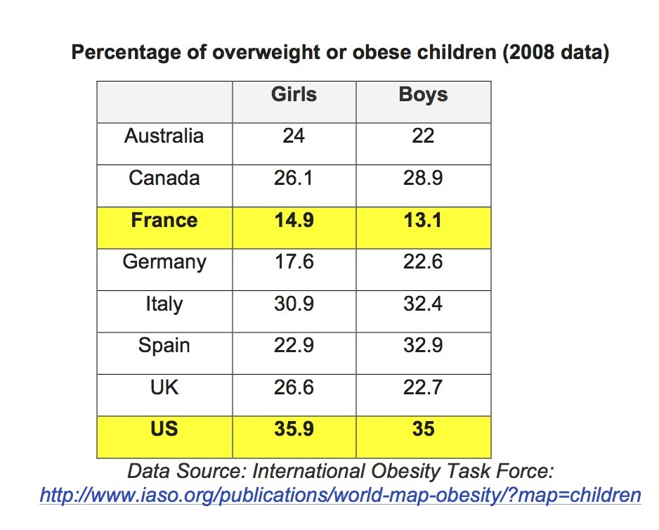
원래 19세기 중반부터 시작된 프랑스 초등학교의 점심식사가 전국적으로 자리잡은 것은 1945년 종전 직후부터였습니다. 이렇게 된 것은 영국과 같은 취지에서였습니다. 제2차 세계대전 직후, 부족한 식량 사정으로 인해 많은 어린이들이 영양 실조의 위협에 놓이게 되자, 최소한 한끼는 제대로 된 식사를 먹게 하자는 것이었지요. 그러나 이때 시작된 점심 급식은 주로 저소득 계층의 어린이들이 먹었고, 부유층 아이들은 그 어머니가 애를 집으로 데려와 제대로 된 가정식을 먹였다고 합니다. 지금도 프랑스에서는 학교 점심 시간 때 집에 가서 먹고 올 수 있습니다. 점심 시간이 대략 1시간에서 2시간 정도거든요. 그러나 점차 프랑스 여성들이 일을 하게 되면서 (현재는 여성의 2/3 정도가 풀타임 직업을 가지고 있음) 학교 급식을 먹는 아이들이 늘게 되었고, 지금은 전인 교육과 사회 교육의 일부로 거의 모든 어린이가 참여하도록 권장되고 있고 또 실제로 거의 모든 학생들이 참여한다고 합니다. 학교 음식을 좋아하지 않는 학생들에게 도시락을 싸올 자유가 없는 것은 아니지만, 도시락을 싸오는 것은 적극적으로 만류된다고 합니다.
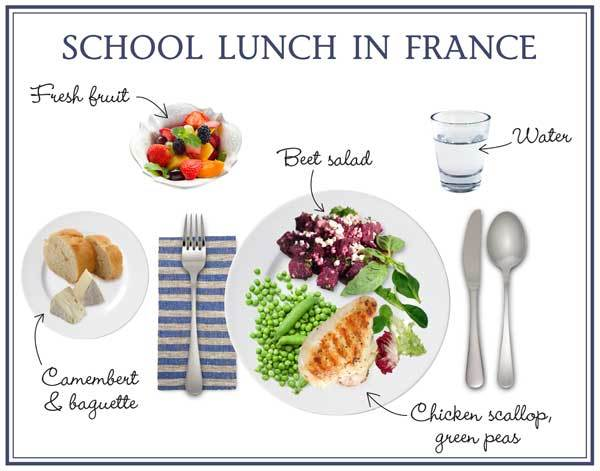
학생들의 개인 취향이나 사정을 무시하고 단체 식사를 하도록 강요하는 것이 마치 북한 같다고요 ? 댓처의 잔재가 여전히 많이 남아 학교 점심까지도 민영화하는 영국과는 달리, 학교 점심 메뉴에 대해서는 자유를 사랑한다는 혁명의 국가 프랑스가 오히려 더 많은 규제를 합니다. 프랑스 교육부는 학교 급식에서 제공되는 식사량과 영양 구성, 심지어 조리 방법에 대해서도 엄격한 규정을 가지고 있습니다. 가령 15% 이상의 지방 함유량을 가진 음식은 디저트의 경우 1달에 3회, 메인 요리의 경우 1달에 4회를 넘을 수 없게 되어 있고, 케첩은 1주일에 1번 이상은 제공할 수 없도록 되어 있습니다. 또, 샐러드 드레싱이나 마요네즈, 케첩 등을 아이들이 원하는 만큼 먹는 것을 막기 위해, 그런 양념류를 식탁 위에 놓아두지 못하게 되어 있습니다. 초콜렛우유 딸기우유 등도 금지되어 있고, 콜라나 사탕 등 그 어떤한 자판기도 당연히 금지되어 있습니다. 대개의 경우, 음료수는 그냥 정수기를 거친 수도물을 핏처에 담아 식탁마다 제공하게 되어 있습니다.
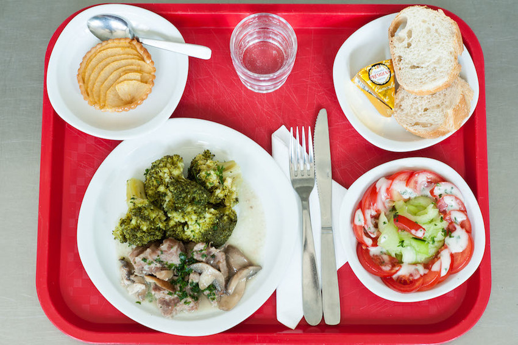
첫코스 : 오이 토마토 샐러드 메인코스 : 버섯을 곁들인 송아지 고기, 브로콜리, 치즈 디저트 : 사과 타르트 하지만 프랑스식 학교 점심이 완벽한 모범 모델은 아닙니다. 일단 프랑스도 점점 점심 식사 준비를 외부 민영 회사에 아웃소싱하고 있는 추세입니다. 이에 대해서는 찬반 논쟁이 뜨겁습니다. 물론 그런 아웃소싱의 경우라고 하더라도 제대로 된 급식을 위해 그 급식 업체를 감독하는 것은 지방 정부의 책임 소관입니다. 또 프랑스 교육부의 학교 점심에 대한 규제를 모든 학교가 다 엄격하게 지키지도 않는다고 합니다. 결정적으로, 학교에서 제공하는 점심이 맛있다고 생각하는 어린이들은 불과 50% 정도입니다. (하긴, 애들은 브로컬리나 양배추 샐러드 보다는 피자와 감자튀김을 더 좋아하게 되어있지요.) 또 정교 분리의 원칙에 따라 학교에서 종교적인 상징물을 사용할 수 없도록 한 규정 때문에, 프랑스에서 5~8%를 차지하는 것으로 추정되는 무슬림 가정의 여학생들은 머리를 가리는 히잡도 못 쓰게 되어 있습니다. 그러다보니, 무슬림들이 유일하게 먹을 수 있는 고기는 '할랄' (halal) 과정을 거친 고기인데, 그런 '할랄' 고기는 학교에서 제공되지도 않고, 또 집에서 도시락으로 싸온다고 하더라도 교내에서는 먹을 수 없게 되어 있습니다.
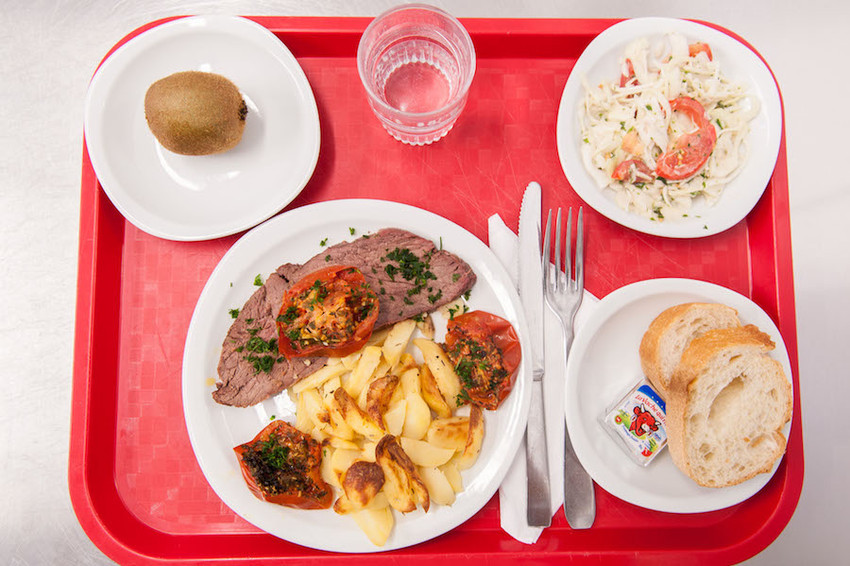
첫코스 : 양배추 토마토 샐러드 메인코스 : 구운 쇠고기, 감자, 허브를 곁들여 구운 토마토, 치즈 디저트 : 키위 이성적이라는 프랑스를 생각하면 매우 뜻 밖인 규정도 있습니다. 대도시의 경우 학생 수가 많다보니 학교 식당에 수용 가능한 숫자보다 학생 수가 더 많은 경우가 종종 있는데, 이럴 경우 두 부모가 모두 일을 하는 학생에게 제1순위가, 부모 중 어느 한쪽만 일을 하는 학생에게 제2순위가, 그리고 두 부모가 모두 일을 안하는 경우엔 가장 낮은 순위가 주어지는 것입니다. 취지는 두 부모 모두가 일을 할 경우엔 시간이 없으나 부모들이 모두 일을 안 하는 경우엔 시간 여유가 있으니 그런 경우 점심 때마다 아이를 집에 데려가서 먹이라는 것입니다. 하지만 상식적으로도, 두 부모가 모두 실업 상태인 것도 서러운데 학교 식당에도 못 들어간다는 것은 너무한 조치이고, 또 '너희 부모는 둘 다 실업자구나' 라는 놀림을 받을 수도 있으므로, 이런 규정은 철폐되어야 한다는 목소리가 프랑스 내에서도 높다고 합니다.
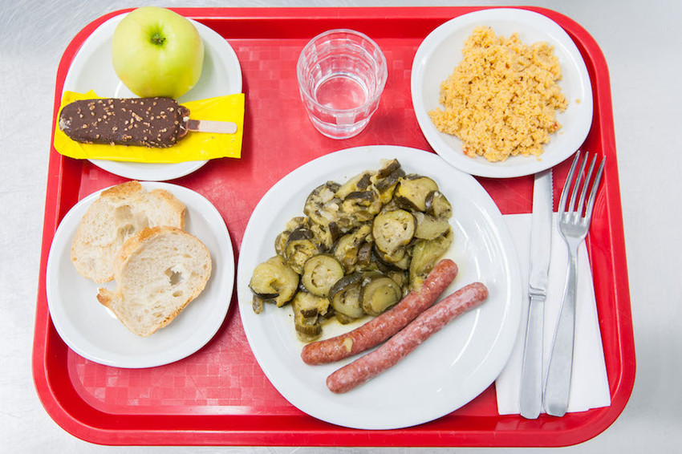
첫코스 : 밀로 만든 터뷸레 (레바논식 샐러드) 메인코스 : 소시지, 주키니 호박 디저트 : 아이스크림, 사과 자, 정치적으로 가장 쟁점이 되는 급식 비용에 대해서 보시지요. 프랑스는 (적어도 표면적으로는) 우리나라 보수파 편을 들고 있습니다. 즉, 급식은 유료이고, 저소득층의 경우에만 무료 급식을 받게 되어 있습니다. 그러나 자세히 보면 우리나라 진보파도 프랑스의 급식 비용에 대해서는 기쁜 마음으로 받아들일 것 같습니다. 프랑스 초등학교 점심 비용은 지방 정부가 정하게 되어 있는데, 약간의 가격 조정을 허락하되 어느 이상의 상한선을 넘지 않도록 되어 있습니다. 그러다보니 부유한 도시에서는 좀더 비싼 식사를 먹이고, 가난한 지방에서는 상대적으로 싼 식사를 먹이게 됩니다. 그러나 그 차이가 크지는 않습니다. 상한선 등이 정해져 있으니까요. 그리고 항상 그 지방의 농수산물을 쓰게 되어 있는데, 이는 그 지방의 농어민에게도 경제적으로 도움이 되는 정책이므로 환영받고 있습니다.
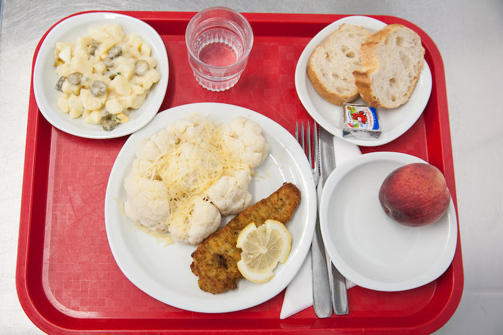
첫코스 : 감자와 피클 샐러드 메인코스 : 빵가루를 입혀 튀긴 생선, 콜리플라워, 치즈 디저트 : 복숭아 프랑스 급식의 한끼에 대해 학생들이 내는 비용은 평균적으로는 약 3천원~3천5백원입니다. 아마 이해가 안 가실텐데, 누가 봐도 형편없는 영국 급식 비용이 3천7백원인데 5코스짜리 프랑스 급식 비용이 그보다 싸다는 것은 이상하니까요. 실제 프랑스 학교 급식 비용은 영국보다 훨씬 높은 6천원~7천원 정도입니다. 학생들에게 부과되는 비용이 그 절반 정도인 것이지요. 뿐만 아닙니다. 똑같은 급식을 먹으면서도 학생들마다 내는 비용이 다릅니다. 저 3천원~3천5백원은 평균적인 비용일 뿐이고, 학생들이 내야 하는 비용은 그 부모의 소득에 따라 다릅니다. 마치 추가적인 소득세를 걷는 것처럼요. 소득이 높은 파리의 경우, 대부분의 가족은 초등학생 1인당 3천원, 부유층은 최고 7천원을 내고, 저소득층은 200원을 냅니다. 이런 급식 비용은 어느 학생이 얼마나 내는지 다른 급우들이 모르도록 부모가 따로 납부하게 되어 있나 봅니다. 저런 차등 비용에 있을 수 있는 '낙인 효과' 문제에 대해서는 논란이 없네요. 이는 '뭐든 부유층은 더 많이 낸다'라는 프랑스식 공감대가 있기 때문에 가능한 것입니다. 프랑스식 급식 제도 멋지지 않습니까 ? 프랑스 학교 급식에 대해서는 아래 site들과 (늘 그렇듯이) wikipedia에서 정보를 대부분 가져왔습니다.
karenlebillon.com/french-school-lunch-menus/
** 그리고 이 글은 2015년 1월에 다음 블로그에 썼던 글을 재탕하는 글입니다.